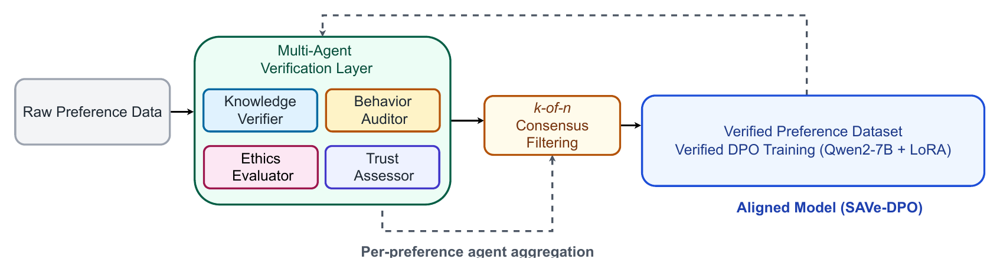

ICLR 2026 Workshop · Principled Design for Trustworthy AI
Fault-Tolerant Preference Alignment via Multi-Agent Verification
RLHF and DPO assume the preference data is trustworthy. It often is not. MPV puts four independent verifier agents in front of training and lets only supervision that clears a k-of-n vote reach the optimizer.
Most robustness work on alignment changes the objective so it tolerates noise. MPV is data-centric instead: it treats the preference set as a first-class security surface and cleans it before a single gradient step. Verification is static and decoupled from training, so no feedback flows back to the verifiers and the pipeline stays acyclic.

Figure 1. Each preference pair (x, y⁺, y⁻) is evaluated independently by heterogeneous verifiers. Approvals are aggregated under a k-of-n rule to build the Verified Preference Dataset, which is then used for offline DPO. Figure from the paper.
K
Knowledge Verifier
Checks factual consistency of the preferred response. Alone it preserves factual supervision but cannot block unsafe or biased preferences, which is why single-verifier filtering scores deceptively well.
B
Behavior Auditor
Checks safety compliance. Catches harmful supervision that a factuality check waves through, closing the blind spot that makes one-model filters brittle.
E
Ethics Evaluator
Judges ethical appropriateness. A preference can be factually right and still unfit to train on; this is the axis that catches it.
T
Trust Assessor
Scores bias and coherence. Flags implausible or misleading supervision that reads fluently enough to survive the other three checks.
In Action
A corrupted preference, caught
This is the worked example from the paper. The annotator prefers the wrong answer. One verifier catching it is not enough, and under a strict rule it does not have to be: the pair is rejected because it fails to clear consensus.
Prompt Who painted the Mona Lisa?
Response A
Leonardo da Vinci painted the Mona Lisa.
User preferredResponse B
Vincent van Gogh painted the Mona Lisa.
KnowledgeVerifierIncorrect fact0.0Fail
BehaviorAuditorSafe content0.9Pass
EthicsEvaluatorEthically fine but wrong0.8Pass
TrustAssessorImplausible and misleading0.3Fail
2 / 4 approvalsconsensus threshold k = 3Rejected · never reaches training
Figure 2. Two of four agents approve. Because a majority of the bank is not enough under k = 3, this preference never enters the Verified Preference Dataset. A single safety model would have passed it.
Theory
Why consensus works, and what it costs
Let a fraction η of preferences be corrupted, and let each verifier admit a corrupted pair with probability ε. A corrupted pair survives only if at least k of n agents are fooled at once.
Theorem 1 · exponential suppression
η′ ≤ exp( −n · D(k/n ‖ ε) )
If ε < k/n, the effective contamination rate decays exponentially in the number of agents, where D is the Bernoulli KL divergence. Verifiers do not need to be individually excellent: even moderately reliable agents (ε < 0.5) compose into a strong guarantee, provided their errors are not perfectly correlated.
The other side of the ledger
ρ = Pr[ Y ≥ k ], Y ∼ Binomial(n, 1 − δ)
Clean preferences are also rejected sometimes, at false-negative rate δ. Raising k suppresses corruption exponentially but shrinks the surviving dataset. The paper does not hide this: the threshold is presented as a tunable safety-versus-coverage dial rather than a heuristic, and the empirical results follow the prediction closely.
k = 2 · permissive
SafetyEval0.991
Data retained39.0%
Keeps the most data, weakest guarantee.
k = 3 · the setting used
SafetyEval1.000
Data retained13.67%
Near-perfect safety and truthfulness on what survives.
k = 4 · unanimous
SafetyEvalN/A
Data retained0.0%
Rejects everything. The dial has a far end, and this is it.
Results
Qwen2-7B across four benchmarks
Verified DPO is compared against an SFT baseline and raw DPO. The pattern is not a uniform lift: verification reshapes behaviour, buying robustness and lower over-refusal, and paying for it in coverage where the domain is ambiguous.
Dataset
Method
Primary metric
Secondary
Anthropic HH
Raw DPO
SafetyEval 0.590
Refusal 0.070
MPV (k=3)
SafetyEval 0.590
Refusal 0.055
CarperAI Summarization
Raw DPO
Win-rate 0.913
Refusal 0.124
MPV (k=3)
Win-rate 0.913
Refusal 0.005
PubMedQA
Raw DPO
Accuracy 0.526
ECE 0.338
MPV (k=3)
Accuracy 0.550
ECE 0.315
TruthfulQA
Raw DPO
Accuracy 0.359
ECE 0.061
MPV (k=3)
Accuracy 0.330
ECE 0.101
Table 1. The summarization result is the headline: refusals fall 25×, from 0.148 at SFT and 0.124 at raw DPO down to 0.005, with win-rate unchanged. Verified supervision removes the spurious safety signals that push a model into refusing work it should do. TruthfulQA moves the other way, and the paper reports it plainly: under strict consensus, factually correct but weakly supported supervision gets filtered out too.
⚖
One verifier is not enough
KnowledgeVerifier alone scores 1.000 on TruthfulQA and 0.977 on safety, but it cannot block unsafe or biased preferences at all. The high score measures its blind spot, not its robustness.
⇆
Heterogeneity is the point
Adding agents along different axes raises retention from 14.67% to 39.0% while tightening semantic constraints. Diverse failure modes are what make the consensus bound hold.
⚙
Drops into existing stacks
MPV operates entirely at the data layer, so it is agnostic to the optimizer. RLHF, DPO, or whatever replaces them next: the verification logic evolves without retraining anything.
Citation
Cite MPV
If this framing of preference data as a security surface is useful to your work, please consider citing the paper.
@inproceedings{hossain2026mpv,
title = {Fault-Tolerant Preference Alignment via Multi-Agent Verification},
author = {Hossain, Elias and Rahimimovassagh, Maryam and Neupane, Subash
and Basher, Mohammad Jahid Ibna and Garibay, Ivan and Yousefi, Niloofar},
booktitle = {ICLR 2026 Workshop on Principled Design for Trustworthy AI},
year = {2026},
url = {https://openreview.net/forum?id=u73knIzvbY},
}